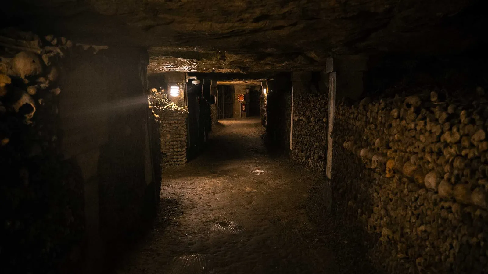

Galeries de l'Enfer
December 8, 2024
Sous les rues animées de la nuit claire,
au tournant de deux galeries de l'Enfer,
mon cœur gît, anéanti.
Soudain, à la lueur de son flambeau,
un visiteur étrange fait briller mon tombeau
et pose son regard sur mon cœur consumé.
Oh, il bat à nouveau dans un murmure léger
avant de s'embraser tout entier
devant l'espoir d'un possible amour retrouvé.
· · ·
Bajo las calles allegras de la noche immaculada,
a la vuelta de dos galerias del Infierno,
mi corazón yace, aniquilado.
De repente, a la luz de su antorcha,
un visitante extraño ilumina mi tumba
y posa su mirada en mi corazón consumido
Oh, late de nuevo en un liviano susurro
antes de incendiarse de todo
ante la esperanza de un posible amor reencontrado
· · ·
Context & Notes
Written in French and Spanish, this poem evokes my first unexpected encounter with R., at a time when my heart felt shattered. The poem draws on the metaphor of the Paris catacombs: a heart lying buried beneath the bustling city, seemingly extinguished, until the arrival of a mysterious visitor... .
Comments
Please don't hesistate to share a thought below.